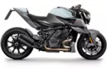
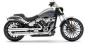
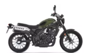
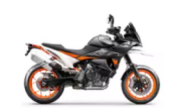

Популярные модели

Brabus 1300 R 2023

Harley-Davidson Breakout 117 2023

Honda CL500 2023

KTM 890 SMT 2023
Поиск
Католог новой мототехники


BAJAJ
BMW
Ducati
Ducati
Harley-Davidson
Honda
Kawasaki
KTM
Suzuki
Triumph
Yamaha
ВСЕ МАРКИ
Мотоциклы, квадроциклы, скутеры – каталог с ценами и характеристиками
Представляем вашему вниманию каталог мотоциклов с ценами и характеристиками. На данной странице представлены практически все бренды мотоциклов, скутеров и квадроциклов, продажа которых осуществляется на территории РФ в официальных автосалонах. Каталог мототехники содержит подробную информацию о характеристиках, актуальных ценах на новые модели, а также фотогалереи и видео подборки.
Представленная страница - не «каталог лучших мотоциклов» или, наоборот неудачных: данный мотокаталог является информационно-аналитическим и не считается редакторской рекомендацией к покупке той или иной модели. Однако, благодаря разработанным сервисам, любой посетитель сам может сделать выбор: на сайте доступно сравнение мотоциклов, скутеров и квадроциклов по различным параметрам. Также есть возможность самостоятельно, задав характеристики мотоцикла, подобрать мототехнику.
МОТОЦИКЛ
Продажа мотоциклов, в отличие от авто, пока не имеет повышенного спроса, о чем свидетельствует хотя бы значительно меньшее количество официальных дилеров, если сравнивать с автомобилями. Впрочем, своя целевая аудитория у мотоциклов есть и, возможно, со временем, в связи со сложными дорожными условиями, количество мотоциклов на улицах Казахстана будет расти.
Безусловно, одно из главных преимуществ, которое видят те, кто хочет купить мотоцикл, — его мобильность, маневренность и, разумеется, «резвость». Хотя есть и те, кто банально следует за детской мечтой: мол, куплю мотоцикл и буду «первым парнем на деревне». Кстати, именно с деревней, действительно, и связана мода на мотоциклы в России, когда в середине 50-х это был единственный доступный транспорт для работяг, и тот, у кого появлялся новый мотоцикл, в самом деле становился первым парнем. Сегодня иметь импортный мотоцикл больше становится делом престижа, нежели прямой необходимости. И для многих мотоциклистов это все-таки второй транспорт, дополнительный к автомобилю, когда авто для «хозяйства», мотоцикл для души. Есть тому и объективные причины: к моменту, когда осуществление детской мечты доступно, многие уже обзаводятся семьями, и мотоцикл не сможет в полной мере обеспечить выполнение «семейных задач»: забрать ребенка из садика, съездить на дачу всей семьей, сделать покупки...
Мотоциклы, разумеется, во многом проигрывают автомобилям, в плане безопасности, грузоподъемности, вместительности.
Но зато динамические характеристики мотоциклов для большинства автомобилей недосягаемы. А такое авто, которое способно ускоряться на уровне, скажем, 600-кубового спортбайка, будет стоить дороже этого мотоцикла на целый порядок.
Убежденные байкеры, для которых «купить мотоцикл» - было главной целью в жизни! Они проводят встречи, собираются в клубы, организуют различные, в том числе благотворительные, мероприятия, вроде мотопробегов, проще говоря — для таких мотоцикл — это религия. Кстати, культ этот также берет начало еще в Советский период, когда молодежь повально увлекалась Чопперами.
Любители, для которых мотоцикл не представляет ни «духовной», ни «культурной» ценности, но сам факт поездки доставляет им удовольствие, которое нередко можно подменить понятием «покрасоваться».
Есть и коллекционеры. Правда, они не всегда покупают именно новые мотоциклы — цены для таких людей значения не имеют, и они скорее гоняются за раритетами. При этом сами могут ни разу и не воспользоваться своими экспонатами по прямому назначению. Примечательно, что последнее время все чаще встречаются на дорогах девушки на мотоциклах. Но даже если отбросить стереотипы о женщинах на дорогах, пока не совсем понятно, что это за тип мотоциклистов.
Иными словами, чтобы понять, какой мотоцикл нужен именно вам, рекомендуем подробно изучить разделы нашего мотокаталога, где вы найдете подробные характеристики мотоциклов, цены на мотоциклы, а также получите возможность сравнить несколько наиболее понравившихся моделей.
КВАДРОЦИКЛ
Еще совсем недавно вопрос, где купить квадроцикл, если и не ставил в тупик, то заставлял задуматься. Действительно, мода на этот вид транспорта в России появилась недавно. Обусловлено это спецификой использования квадроциклов. Для города этот транспорт не предназначен. В случае выезда на природу, прогулок гораздо удобнее пользоваться автомобилем. Для рабочих нужд, в том числе сельских работ, все еще годятся «древние» мотоциклы с коляской. Тем не менее продажа квадроциклов постепенно набирает обороты, и они с каждым сезоном становятся все более востребованы. Новые квадроциклы выбирает себе более молодое поколение, которым важны не только функциональность, но и «эстетическая» составляющая.
Сегодняшние, даже недорогие квадроциклы, гораздо интереснее с дизайнерской точки зрения, они выглядят брутально, современно.
В нашем каталоге представлены:
- Спортивные квадроциклы
- Утилитарные квадроциклы
Спортивные квадроциклы предпочитают скорее для выездов за город с целью «погонять» «по грунтовке», посоревноваться с друзьями или получить дозу адреналина в одиночку. Для тяжелого бездорожья они не подойдут, т.к. привод лишь на задние колеса, да и подвеска их зачастую не независимая. Купить квадроцикл утилитарного типа могут и степенные дачники, которым, например, нужно несколько раз в сутки объехать большие угодья в условиях бездорожья. Так же утилитарные квадроциклы хорошо сгодятся и для прогулочных поездок, в т.ч. по местности со сложным рельефом.